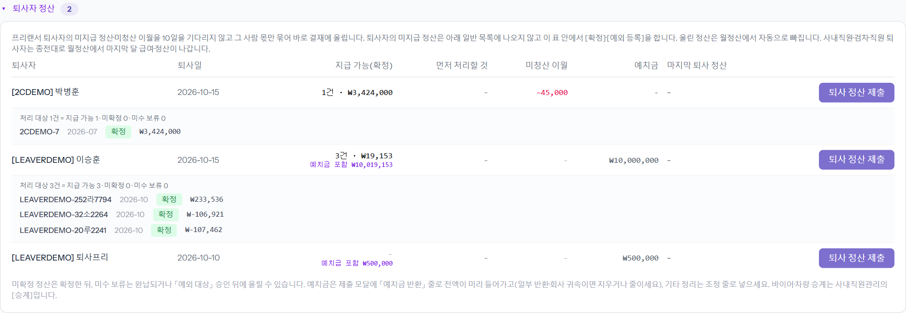
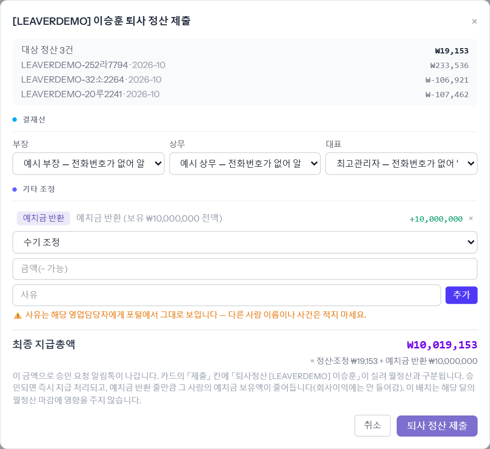

월정산과 따로 결재에 올리는 두 가지입니다. ① 프리랜서가 퇴사하면 10일을 기다리지 않고 그 사람 몫만 묶어 바로 올립니다(퇴사자 정산). ② 내수직원 평가수수료는 「내수직원 월정산」으로 따로 올립니다. 예시는 데모 퇴사자 「[LEAVERDEMO] 이승훈」입니다.
퇴사일이 적힌 프리랜서가 한 줄씩 나옵니다. 「지급 가능(확정)」 · 「먼저 처리할 것」 · 「미청산 이월」 · 「예치금」을 보고, 줄 아래 처리 대상 정산을 이 표 안에서 [확정] · [예외 등록]합니다(퇴사자의 미지급 정산은 아래 일반 목록에 안 나옵니다).

예치금이 있으면 「예치금 반환」 줄로 보유액 전액이 미리 들어가 있습니다. 일부만 돌려주거나 회사에 귀속되면 줄을 지우거나 금액을 줄입니다. 그 밖의 정리는 「수기 조정」으로 금액(− 가능)과 사유를 넣고 [추가]. 「최종 지급총액」이 결재 금액입니다.

사내직원관리 → 내수직원 → 평가수수료 업로드로 그 달 표를 올리면, 「내수직원 월정산」 화면의 「올릴 달」에 인원 · 「총 평가사수수료」 합계가 나옵니다. 결재선을 고르고 [결재 올리기]를 누르면 첫 결재자에게 알림톡이 갑니다. 올린 달은 위에 카드로 쌓이고 「이 달은 이미 올림」이 보입니다.
※ 이 화면은 내수직원 월정산을 쓰는 회사에서, 볼 사람으로 지정된 사람과 자기 차례 결재자에게만 보입니다. 내수가 먼저 · 사내직원 월정산이 나중입니다.